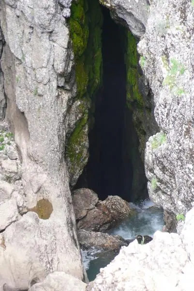
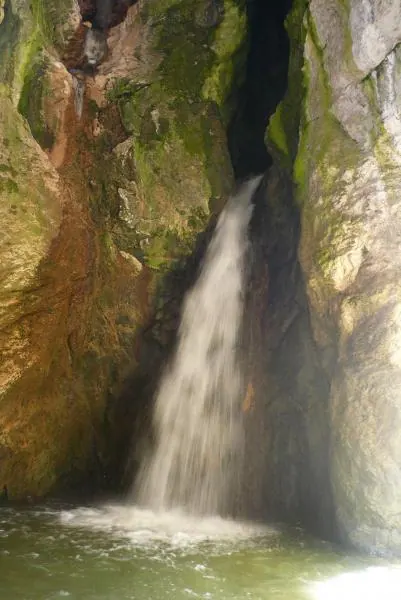

Birinin ayağı, diğerinin eli, üçüncüsünün omzu sakat ve yaş ortalaması 48 olan bir ekip tarafından yapılan 4 günlük yüzey araştırması ancak bu denli verimli olabilirdi. Bulunan 15-20 mağaradan bazıları Türkiye çapında öneme sahip yerler. Resimde gördüğünüz düden Keş Dağı’nın batısında. Bu nehir, yaylada bir kalker duvarın önünde batıyor, 100 m aşağıda dışarı çıkıyor ve 100 m sonra tekrar batıyor, 4 km sonra tekrar çıkıyor.

Soldaki fotoğrafta gördüğünüz su çıkışı ise 2.350 m yükseklikte dev gibi bir ağzın içinden bir şelale halinde dökülerek çıkıyor. Görülmeye değer bir mağara ağzı ve manzara.
Öbür su çıkışı ise akıllara zarar; düz ovada kocaman bir mağara ağzından deli bir nehir çıkmakta, sanki Pınargözü mübarek! Su yaz aylarında biraz daha azalırmış ve içine girilebilirmiş... Göreceğiz bakalım!
Bunların dışında, Yeşilgöz’ün kuzeyindeki Kurucaova’da bulunan düdende -45 m indik, mağara devam ediyor. Bulunan diğer mağaralardan altısı ölçüldü ve haritalandı. Uzun bir rapor hazırlıyoruz ve resimler yakında yayımlanacak. Yani acaip işimiz ve yeni bir Keş Dağı Düdenimiz daha var.